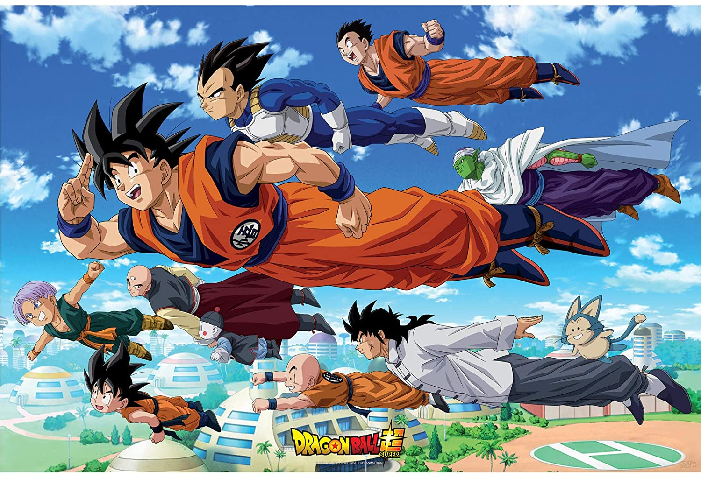

About Goku
Goku is awesome! He is a super sayjin wariror. Who came to earth to destory it but wound up being its greatest hero.
Goku and his friends
Goku's Characteristics
- He's super strong
- He wants to be strong so that he can fight other strong guys
- He is always pushing his boundries
Goku's Friends
Goku has some amazing friends. His best friend is Krillin. But I secretly think it's Vegeta. Click on the links below to read more about them.